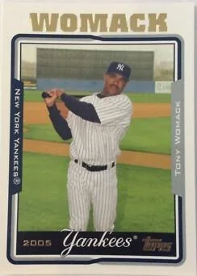
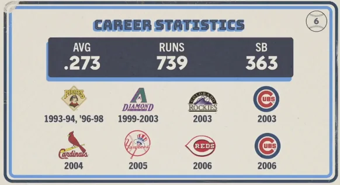

Tony Womack
Career Highlights & Facts
(Facts are AI-generated and may require verification)
- Delivered the decisive walk-off hit in the final game of a historic championship series, securing the first title for his club's city.
- Known for his elite speed on the basepaths, he led his league in stolen bases during back-to-back campaigns.
- Served as a veteran presence in the middle infield for a storied organization during a season where he struggled to find his rhythm at the plate.
Would you like to find out more about Tony Womack?
Career Totals
| WAR | AB | H | HR | BA | R | RBI | SB | OBP | SLG | OPS | OPS+ |
|---|---|---|---|---|---|---|---|---|---|---|---|
| 2.4 | 4963 | 1353 | 36 | .273 | 739 | 368 | 363 | .317 | .356 | .673 | 72 |
Statistics via Baseball-Reference.com
The Original Clue
